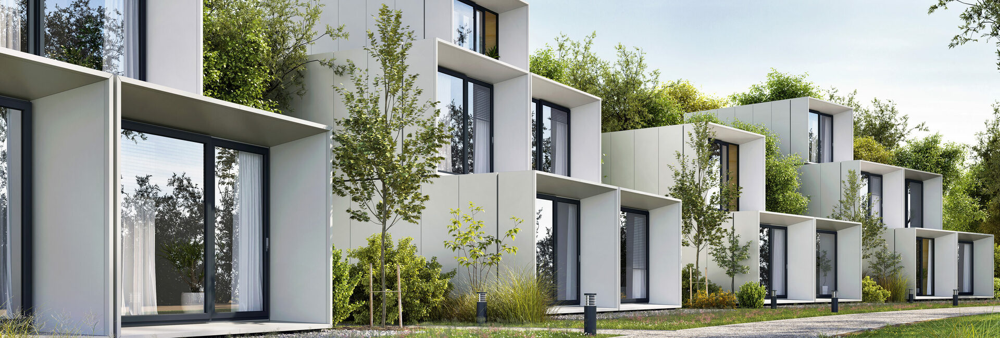
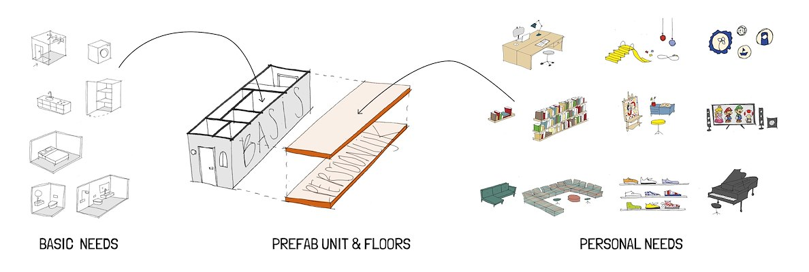

Modulair bouwen / CLT triplex
Modulair bouwen
Modulair bouwen is een relatief nieuwe bouwmethode die steeds meer aandacht krijgt in Nederland. Bij modulair bouwen worden woningen en andere gebouwen gemaakt van modules die in de fabriek worden geproduceerd en vervolgens op de bouwplaats in elkaar worden gezet. Hoewel het idee van modulair bouwen niet nieuw is, maakt de opkomst van nieuwe technieken en materialen het mogelijk om hoogwaardige, duurzame en efficiënte gebouwen te realiseren. We zullen hier het belang van modulair bouwen bespreken en hoe deze bouwmethode kan bijdragen aan het oplossen van het woningtekort in Nederland.
Moduliar bouwen
Modulair bouwen biedt vele voordelen ten opzichte van traditionele bouwmethoden. Eén van de grootste voordelen is dat de productie van de modules in een gecontroleerde omgeving plaatsvindt, waardoor er minder afhankelijkheid is van het weer en de beschikbaarheid van arbeidskrachten. Dit zorgt voor een kortere bouwtijd en lagere bouwkosten. Ook is het mogelijk om modules te produceren in grote hoeveelheden, waardoor er schaalvoordelen ontstaan en de kosten nog verder worden gedrukt.
Een ander belangrijk voordeel van modulair bouwen is de hoge mate van flexibiliteit en aanpasbaarheid. Modules kunnen gemakkelijk worden aangepast aan verschillende wensen en behoeften, waardoor er een grote variëteit aan gebouwen kan worden gerealiseerd. Dit is vooral handig in een tijd waarin de vraag naar verschillende soorten woningen en gebouwen snel kan veranderen.
Het belang van Modulair bouwen
Een belangrijke ontwikkeling in modulair bouwen is het gebruik van duurzame materialen. Hout is bijvoorbeeld een veelgebruikt bouwmateriaal bij modulair bouwen vanwege de duurzaamheid en milieuvriendelijkheid. Hout stoot namelijk geen CO2 uit, maar slaat juist CO2 op. Cross Laminated Timber (CLT) is een materiaal dat steeds vaker wordt gebruikt bij modulair bouwen. CLT bestaat uit vurenhouten lamellen die haaks op elkaar worden verlijmd en geperst. Hierdoor ontstaat een licht, sterk en duurzaam materiaal dat kan worden gebruikt voor de productie van modules.
Modulair bouwen kan ook bijdragen aan het oplossen van het woningtekort in Nederland. Door de snellere bouwtijd en lagere bouwkosten kunnen meer woningen worden gebouwd in een kortere periode. Bovendien biedt modulair bouwen mogelijkheden om woningen te bouwen op locaties waar traditionele bouwmethoden niet geschikt zijn, zoals in stedelijke gebieden met weinig ruimte.
Het belang van Modulair bouwen
Een ander voordeel van modulair bouwen is dat het zeer geschikt is voor hergebruik en recyclen. Bij traditionele bouwmethoden is het vaak lastig en tijdrovend om materialen te hergebruiken of te recyclen. Bij modulair bouwen is dit echter veel eenvoudiger, omdat de modules al prefab zijn geproduceerd en daardoor gemakkelijker uit elkaar kunnen worden gehaald en de onderdelen opnieuw kunnen worden gebruikt. Dit is vooral belangrijk in een tijd waarin duurzaamheid steeds belangrijker wordt. Het gebruik van modulaire bouwmethoden kan bijdragen aan een vermindering van de afvalproductie in de bouwsector en kan bijdragen aan een duurzamere toekomst.
Het belang van Modulair bouwen
Een ander interessant aspect van modulair bouwen is de mogelijkheid tot flexibiliteit en aanpasbaarheid van gebouwen. Traditionele bouwmethoden zijn vaak minder flexibel en aanpasbaar dan modulair bouwen. Bij modulair bouwen kan een gebouw eenvoudig worden uitgebreid, aangepast of verplaatst door simpelweg modules toe te voegen, te verwijderen of te verplaatsen. Dit biedt veel voordelen voor bedrijven die snel moeten kunnen reageren op veranderende marktomstandigheden of bijvoorbeeld snel moeten kunnen uitbreiden of inkrimpen. Ook voor bijvoorbeeld scholen of zorginstellingen kan dit interessant zijn, omdat zij vaak te maken hebben met veranderende behoeften en wensen van gebruikers.
Het belang van Modulair bouwen
Een ander voordeel van modulair bouwen is dat het zeer geschikt is voor hergebruik en recyclen. Bij traditionele bouwmethoden is het vaak lastig en tijdrovend om materialen te hergebruiken of te recyclen. Bij modulair bouwen is dit echter veel eenvoudiger, omdat de modules al prefab zijn geproduceerd en daardoor gemakkelijker uit elkaar kunnen worden gehaald en de onderdelen opnieuw kunnen worden gebruikt. Dit is vooral belangrijk in een tijd waarin duurzaamheid steeds belangrijker wordt. Het gebruik van modulaire bouwmethoden kan bijdragen aan een vermindering van de afvalproductie in de bouwsector en kan bijdragen aan een duurzamere toekomst.
Het belang van Modulair bouwen
Echter, er zijn ook nog enkele uitdagingen die overwonnen moeten worden voordat modulair bouwen met CLT op grote schaal kan worden toegepast in de Nederlandse bouwsector. Automatisering en standaardisering van het productieproces zijn nodig om de productiviteit te verhogen en de kosten te verlagen. Daarnaast moet er ook meer aandacht worden besteed aan de veiligheid en duurzaamheid van het gebruik van CLT als bouwmateriaal.
Het belang van Modulair bouwen
Toch zijn er al diverse succesvolle voorbeelden van modulair bouwen met CLT in Nederland en andere landen, wat aantoont dat het concept werkt en potentie heeft om verder ontwikkeld te worden. De Nederlandse overheid heeft ook al stappen gezet om modulair bouwen te stimuleren, onder meer door het oprichten van het expertisecentrum Industrialisatie en Modulair Bouwen en het verstrekken van subsidies aan innovatieve bouwprojecten.
Het belang van Modulair bouwen
Modulair bouwen met behulp van duurzame materialen zoals Cross Laminated Timber (CLT) is een relatief nieuwe bouwmethode die steeds meer aandacht krijgt in Nederland. Het biedt vele voordelen ten opzichte van traditionele bouwmethoden, zoals een kortere bouwtijd, lagere bouwkosten, hoge mate van flexibiliteit en aanpasbaarheid, mogelijkheden om woningen te bouwen op locaties waar traditionele bouwmethoden niet geschikt zijn en de mogelijkheid tot hergebruik en recyclen van materialen. Bovendien kan modulair bouwen met CLT bijdragen aan het oplossen van het woningtekort in Nederland en zorgen voor een duurzamere toekomst